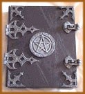

O Livro das sombras também conhecido por
Liber Umbrarium ou Book of Shadows, tem o mesmo objetivo
que um diário para uma garota. A diferença é
que ele é usado pelos bruxos (as) como meio de registrarem
seus feitiços, encantamentos e poções ao
longo da vida mágica. Onde anota-se sonhos, visões,
e tudo mais que queira registrar Arte.
O
nome Livro das Sombras, segundo Ambrosia Knight (uma
bruxa americana) vem do caráter oculto do que se escreve
nele. É um livro que deve ser mantido longe de olhos
curiosos que não pertençam à bruxaria pois
nele colocamos uma parte do nosso poder. A origem desse Livro,
remonta ao tempo das perseguições. Proibidas de
compartilhar oralmente seus conhecimentos, as(os) Bruxas(os)
da Idade Média, escreviam seus conhecimentos e feitiços,
em um Livro que ficava escondido, por isso o termo "das
Sombras", pela menção de que deveria ficar
oculto a qualquer preço, sob seu dono ter contra si,
provas incontestáveis de Bruxaria.
O Livro é um instrumento muito íntimo.
Sendo assim, tradicionalmente não se permite que ninguém
fora da Arte toque no seu livro, é permitido que outros
bruxos leiam o que você autorizar, ou até mesmo
que copiem encantos ou feitiços, mas o livro nunca pode
ser emprestado e cada um pode, de diversas formas, descrever
suas experiências, o que se torna natural e saudável.
Outro motivo para não deixar que qualquer
pessoa leia seu livro, é que ele reflete o seu mundo
mágico, o seu mundo da bruxaria, e algumas coisas podem
vir a chocar pessoas leigas, que não saibam o significado,
ou possa fazer com que você caia em descrédito
junto à comunidade ou a seus familiares, perturbando
de certa forma sua vida cotidiana.
Texto extraído
de http://www.wiccarte.com.br